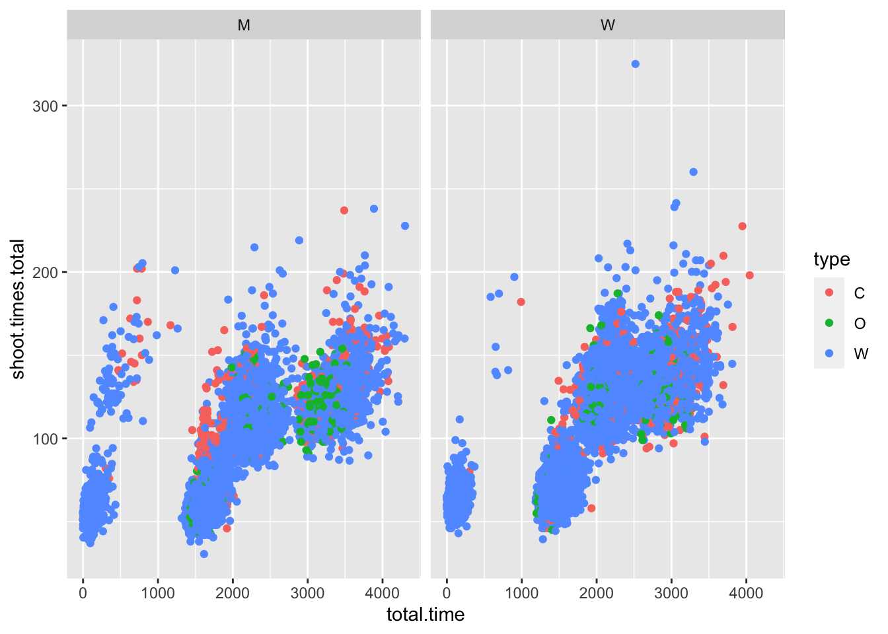

14 H20
Internetverbundenes Packet, basierend auf JAVA!!
ich werde es nicht herunterladen, deswegen nur den ersten Block mitgeschrieben
localH20 = h2o.init(
ip = "localhost",
port = 54321,
startH2O = T,
nthreads = -1,
max_mem_size = "2G"
)14.1 Aufgabenblatt
library(tidyverse)
library(GGally)
library(pastecs)load("data/biathlon4.RData")
load("data/biathlon3.RData")a) Betrachten Sie zunächst alle Variablen im Datensatz und analysieren Sie diese hinsichtlich Ihrer Lage und Streuung. Lassen sich irgendwelche Auffälligkeiten feststellen? Wenn ja sollten Sie überlegen, wie Sie diese bereinigen bzw. beseitigen könnten.
test %>%
dplyr::select(c(total.time, shoot.times.total, fails.total, type)) %>%
stat.desc(basic = F) ## total.time shoot.times.total fails.total
## median 1.808850e+03 92.0000000 2.00000000
## mean 1.893898e+03 95.6011581 2.81648027
## SE.mean 7.487072e+00 0.3059346 0.01727304
## CI.mean.0.95 1.467577e+01 0.5996773 0.03385772
## var 7.217802e+05 1204.2060904 3.84165770
## std.dev 8.495765e+02 34.7016727 1.96001472
## coef.var 4.485861e-01 0.3629838 0.69590927
## type
## median NA
## mean NA
## SE.mean NA
## CI.mean.0.95 NA
## var NA
## std.dev NA
## coef.var NAtest %>%
dplyr::select(c(total.time, shoot.times.total, tot.climb)) %>%
ggpairs()## Warning in ggally_statistic(data = data, mapping =
## mapping, na.rm = na.rm, : Removed 10 rows containing
## missing values## Warning in ggally_statistic(data = data, mapping =
## mapping, na.rm = na.rm, : Removed 57 rows containing
## missing values## Warning: Removed 10 rows containing missing values
## (geom_point).## Warning: Removed 10 rows containing non-finite values
## (stat_density).## Warning in ggally_statistic(data = data, mapping =
## mapping, na.rm = na.rm, : Removed 67 rows containing
## missing values## Warning: Removed 57 rows containing missing values
## (geom_point).## Warning: Removed 67 rows containing missing values
## (geom_point).## Warning: Removed 57 rows containing non-finite values
## (stat_density).
test %>%
ggplot(aes(x = total.time, y = shoot.times.total, color = type)) +
geom_point() +
facet_wrap(~gender)## Warning: Removed 10 rows containing missing values
## (geom_point).
Komisch: bei letzem Graphen erkennbar eine kleine Gruppe mit niedrigen Zeiten, unabhängig vom Rest des Feldes
vielleicht abhängig von Teamsachen
test$is_team <- grepl("[0-9]", test$nation) #checks if there are any numbers in nation name, a sign for a team base
test %>%
ggplot(aes(x = total.time, y = shoot.times.total, color = is_team)) +
geom_point() +
facet_grid(~gender)## Warning: Removed 10 rows containing missing values
## (geom_point).
funktioniert so ein bisschen, nicht komplett, aber egal.
14.1.1 Filtern + Standardisieren des Datensatzes
welche Variable wollen wir erkennen lassen ?
colnames(test)## [1] "nation" "gender"
## [3] "type" "total.time"
## [5] "course.lap.1" "course.lap.2"
## [7] "course.lap.3" "course.lap.4"
## [9] "course.lap.5" "course.total"
## [11] "shoot.times.1" "shoot.times.2"
## [13] "shoot.times.3" "shoot.times.4"
## [15] "shoot.times.total" "fails.1"
## [17] "fails.2" "fails.3"
## [19] "fails.4" "fails.total"
## [21] "max.climb" "tot.climb"
## [23] "height.diff" "is_team"Datensatz extrahierung
st_test <- test %>%
dplyr::select(total.time, course.total, shoot.times.total, height.diff) %>%
scale()
st_train <- train %>%
dplyr::select(total.time, course.total, shoot.times.total, height.diff) %>%
scale()